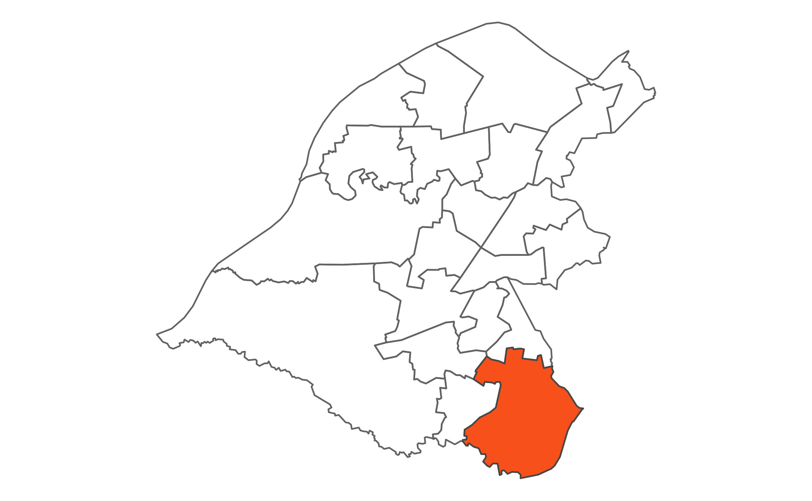

 Hale Barns lies at the southern tip of the Borough. It is bounded to the east by the M56, to the south by the River Bollin, by the residential areas of Altrincham to the west and Newhall Green to the north. The ward contains a large amount of agricultural land including two private golf courses. There is also a number of private sports clubs within the ward providing facilities for tennis, bowling and football. It is generally considered to be an affluent ward in the top 10% wealthiest areas in England. Hale Barns has a good motorway network and is convenient for Manchester Airport. The ward is diverse in nature and is home to large Jewish and Muslim community groups.